About ME
学歴 EDUCATION
-
2016.03 ~ 2022.02蔚山科学大学 | 卒業
デジタルコンテンツデザイン学科専攻
-
2022.05 ~ 2022.11グリーンコンピュータアカデミー | 修了
ウェブパブリッシャーコース | Photoshop、Illustrator、UI/UX、HTML、CSS、JavaScriptなど
-
2024.04 ~ 2025.03ISIキャリア外語アカデミー渋谷校 | 卒業（日本）
留学 | 日本語、ビジネス日本語、チーム活動
-
2026.03 ~ 2026.11Data Science Academy 釜山 | 修了予定
Smart cloud ITマスターAX/DX （釜山2026-1）| Java、MySQL、HTML、CSS、JavaScript、Spring Boot、AI活用など
職歴 CAREER
-
2019.06 ~ 2020.06宇宙銘板株式会社 | 正社員
産業用銘板及び各種銘板デザイン | CADやCorelDRAWというツールを使用し、設計図に沿って銘板をデザイン
-
2023.06 ~ 2023.09プリンタランド（日本）| アルバイト
ストラップ キーホルダー制作 | 顧客様の注文表と図案を確認・ミシンと材料の設定・資材在庫管理
-
2023.09 ~ 2024.02豚キホーテ（日本）| アルバイト
韓国料理レストラン | キッチンアシスタントと食器洗い
SKILLS
資格 CERTIFICATES
-
言語
JLPT N2N1 受験予定
-
PC・OA
コンピュータ活用能力 2級
ワープロ実技 1級
ITQ OA マスター
使用できる技術 TECH STACK
-
Backend / DB
- Java
- Spring Boot
- MySQL
- Node.js
-
Frontend / Design
- HTML5
- CSS
- JavaScript
- Figma
-
Tools
- Git
- GitHub
- Claude AI
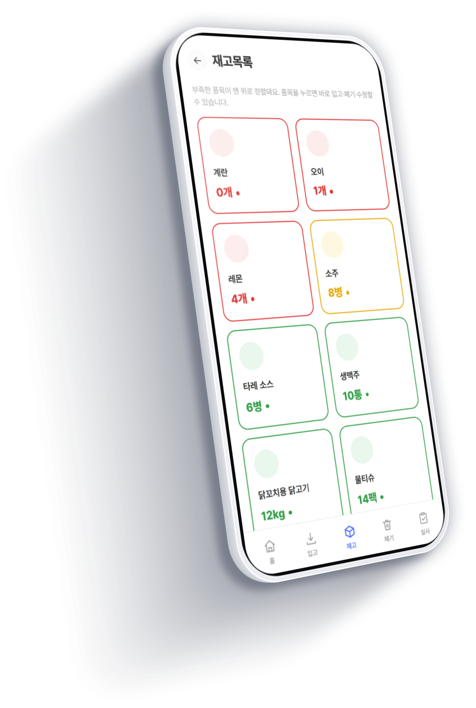
PROJECT
IzaCare 居酒屋向け 店舗管理Webアプリ
-
01
概要
在庫・予約・勤怠など、居酒屋の日常業務を1つのスマホ向けWebアプリにまとめた店舗管理システム
-
02
企画きっかけ
チームメンバーのワーキングホリデー中のアルバイトで、シフトや連絡事項の管理が大変だったという実体験から企画
-
03
担当範囲
Figmaによる全画面の設計、下部タブのアイコン提案、出退勤機能、お知らせ、日報掲示板を、設計から実装まで担当
-
04
使用技術
Java 21 / Spring Boot 3.3 / Spring Data JPA / H2 / Gradle / HTML・CSS・JavaScript（フレームワークなし）/ Figma
01
システム構成 SYSTEM
ブラウザからH2データベースまでの全体像です。
リクエストは共通処理を通ってControllerに入り、ロジックとRepositoryを経てDBに届きます。
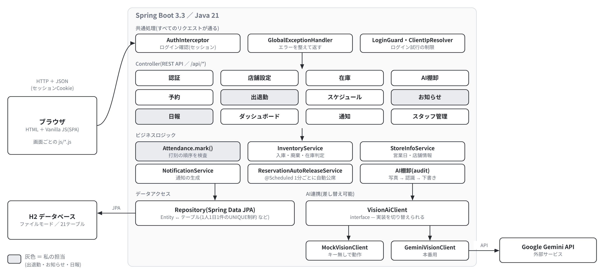
- 共通処理を一か所に集約ログイン確認とエラー処理をすべてのリクエストの入口にまとめ、Controllerごとに書かないようにしています。
- AI連携は差し替え可能画像認識はinterfaceの後ろに置き、キーがなくてもMockで動くようにしました。
- 打刻の順序検査はEntityの中に出退勤の順序のルールをAttendanceのmark()に置き、画面を通さない送信でも同じ検査が働きます。
02
画面設計 FIGMA
実装に入る前に、Figmaで全画面を設計しました。
オーナーとスタッフで画面を分け、チーム全員が同じ完成形をイメージして開発できるようにしました。
-
1画面遷移図
まず「どの画面からどの画面へ行けるか」を整理しました。全画面を6つの機能グループに分け、ホームを起点にした構成にしています。
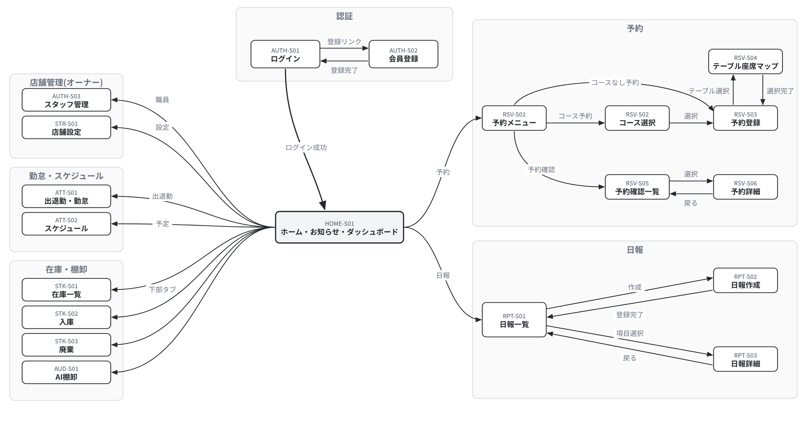
-
2手書きワイヤー
Figmaを開く前に、紙でおおまかな画面を描きました。予約のテーブル選択は「飛行機やKTXの座席選択のように」というメモから、席を図で選ぶ画面に発展しました。
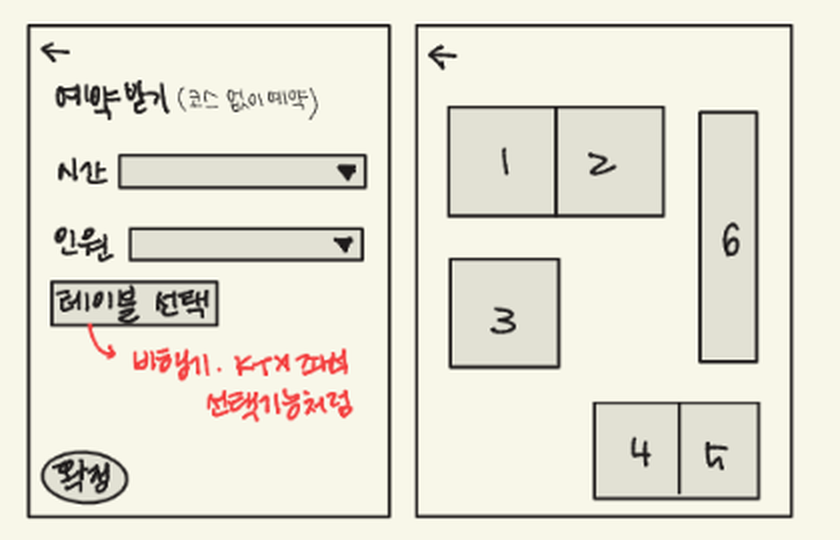
-
3Figma 完成画面
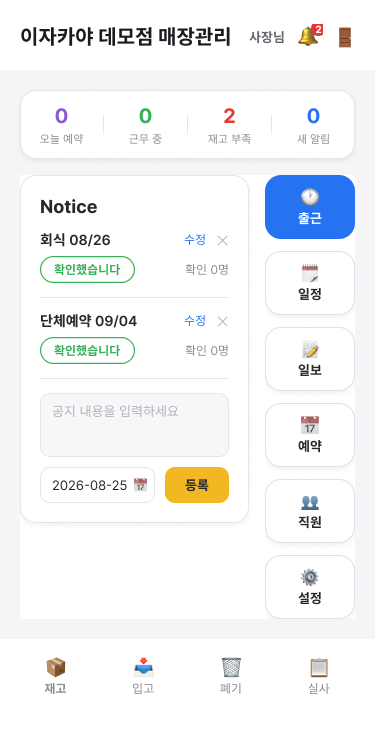
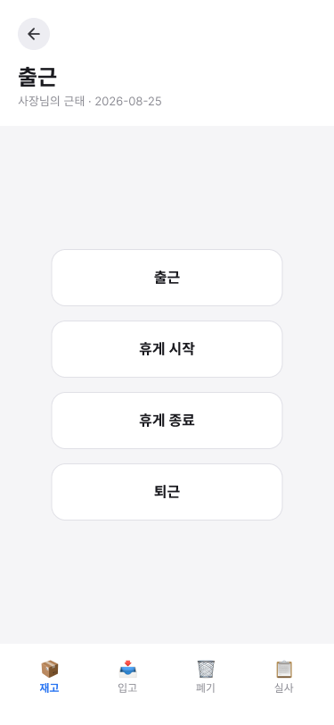
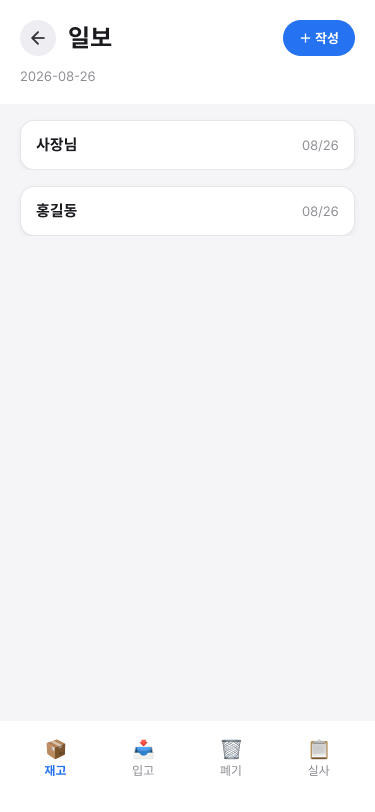
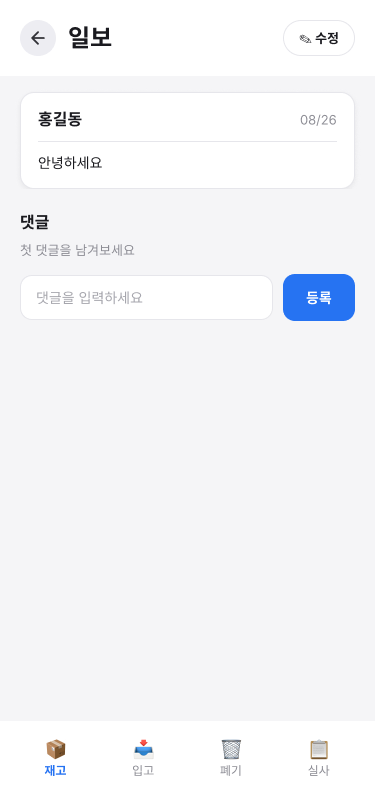
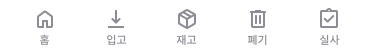
下部タブのアイコン提案
絵文字ではなく、線の太さと大きさをそろえたラインアイコンを提案しました。選択中のタブは背景で強調し、5つのタブを見分けやすくしました。
03
出退勤 ATTENDANCE
打刻と同時に「店にいるか」を確認する機能です。
位置が取れなくても打刻は止めず、結果を記録するだけにしました。
- 1打刻ボタン出勤・退勤を押す
- 2GPS店舗の範囲内か判定
- 3Wi-Fi IPGPSが無理なら店のIPで判定
- 4結果を記録店内 / OUTSIDE / UNKNOWN
設計のポイント
- 記録のみ・打刻は止めない電波が悪くて打刻できず、スタッフが困らないようにしました。
- 座標は保存しない位置情報は判定にだけ使い、DBには結果だけを残します。
- 営業日の区切り深夜勤務でも日付が分かれないよう、営業日を基準にしました（基準 06:00 / 閉店+2時間 / 最大09:00）。
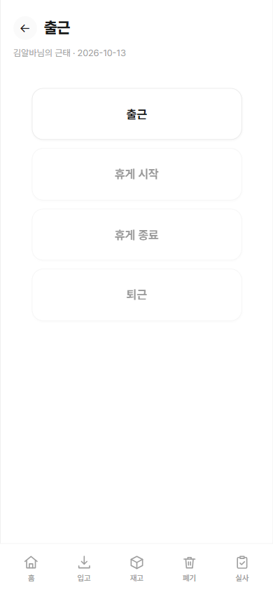
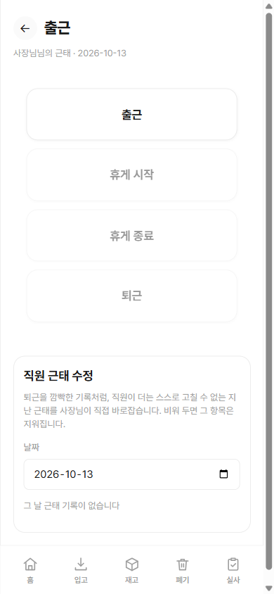
04
お知らせ・日報 NOTICE / REPORT
店舗内の連絡を紙やチャットに散らさず、アプリで確認できるようにしました。
誰が読んだか、誰が何を書いたかが後から分かります。
お知らせ
- 確認（既読）スタッフが確認すると記録され、オーナーが誰が未確認かを把握できます。
- 変更履歴修正の内容と日時が残ります。
- 権限の分離確認状況のブロックはオーナーだけに表示します。
日報掲示板
- コメント日報ごとにやり取りでき、引き継ぎがスムーズになります。
- 履歴と権限編集履歴を残し、書いた本人とオーナーだけが修正できます。
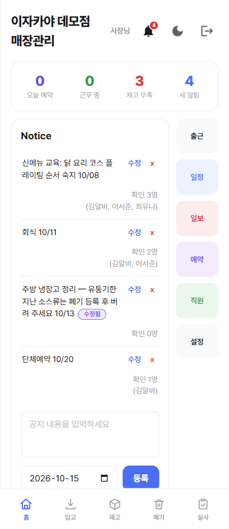
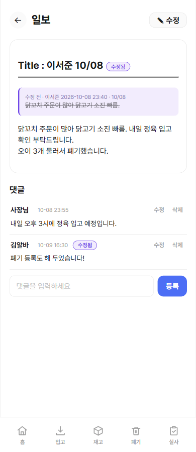
05
トラブルシューティング TROUBLESHOOTING
開発中に見つけた問題のうち、出退勤で直した2つです。どちらも「画面だけでなく、サーバーとDBでも守る」ことが共通点でした。
操作順のロック
- 問題
- テスト中に、出勤前に「退勤」が押せることや、休憩を始めていないのに「休憩終了」が押せることに気づきました。最初はボタンの順序を制限しておらず、記録が崩れる状態でした。
- 判断
- 画面でボタンを隠すだけでは、画面を通さない送信で破られてしまいます。そのため、サーバー側でも順序を検査することにしました。休憩は必要な人だけが使う任意の操作にし、休憩なしでも退勤できるようにしました。
- 解決
- 押せるボタンを状態ごとに1つずつ進める形にしました。出勤前は「出勤」だけ、出勤後は「休憩開始」と「退勤」、休憩を始めたら「休憩終了」を押すまで退勤は押せません。
- 結果
- 画面・サーバー・DB（1人1日1件の制約）の三重で防ぐ構造にしました。
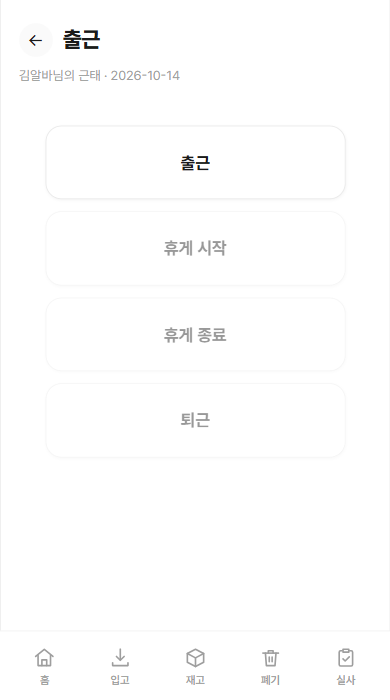
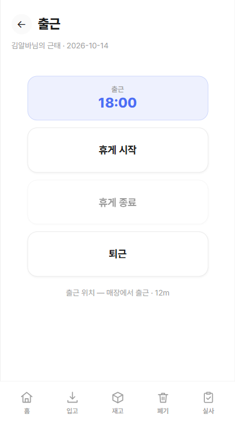
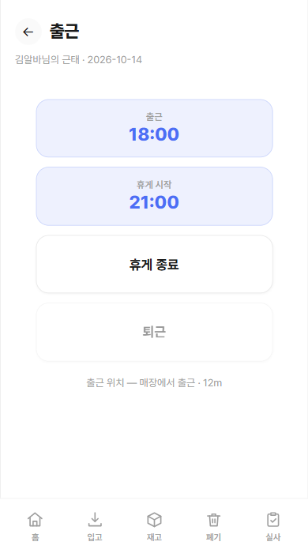
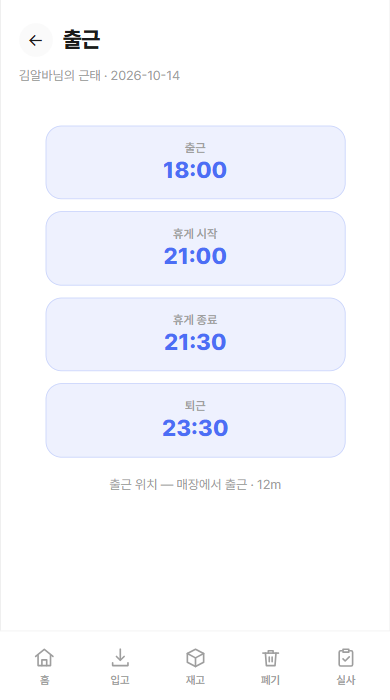
出勤の連打で6件重複
- 問題
- 出勤ボタンを連打すると、同じ日の出勤記録が一度に6件できてしまいました。
- 原因
- サーバーの重複チェックは「すでにある記録」しか見ていませんでした。そのため、ほぼ同時に届いた複数のリクエストが、それぞれ新しい記録を作れてしまいました。
- 対応
- DBに
UNIQUE(店舗, スタッフ, 勤務日)を追加し、DB自身が1人1日1件を守るようにしました。画面側も、処理中はボタンを止めて二重送信を防ぎます。
画面だけでなく、サーバーとDBで二重に守ることを学びました。
06
感想 REFLECTION
初めてのチーム開発だったので、振り返ると、見落としていたことがたくさんありました。
いちばん大きかったのは、設計が足りなかったことです。実装に入る前の設計が浅く、出勤ボタンの連打で記録が6件できるといった問題に、作ってから気づきました。画面設計も、リファレンスを十分に集めないまま、最初に手で描いた簡単な案を最後まで使い続けてしまいました。
テストも足りませんでした。店舗ごとにデータを分ける作りにしたのに、確認したのは1店舗だけでした。GPSによる出勤の判定も、店の外では試せていません。位置情報についてはもう一つあります。スマホの位置情報はHTTPSでしか動かないので、HTTPSでの公開が次の課題になりました。
作りの面でも、データベースは外部のものではなくH2のファイルを使いました。画面はフレームワークなしのJavaScriptで書いたので、仕組みを一から理解できた一方、部品の再利用や状態の管理は自分で用意する必要がありました。材料の項目も、実際の居酒屋にはもっとたくさんあるはずですが、細かく分けきれませんでした。
次にやり直すなら、実装の前に、画面だけでなく画面とサーバーがやり取りする内容まで設計します。リファレンスを集めてから画面設計に入り、外部のデータベースを使って、HTTPSで公開できる構成にしたいです。